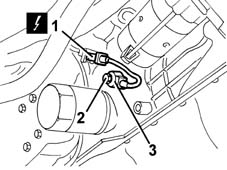

5510C42 knock sensor - r+r
- Path
- Procedures > 55 ELECTRICAL EQUIPMENT > 5510 ENGINE IGNITION > 5510C coil, ecu, sensors > 5510C42 knock sensor - r+r
- Kind
- repair procedure (removal / refitting; the operation number is the code)
- Applies to
- engines: 1.6 16v; all production periods
- Interactive page
- https://sloeber94.github.io/elrnDB-fMltpl/en/#/2891886
Applies to: engines: 1.6 16v; all production periods
 Removing
Removing
 Refitting
RefittingPlace the vehicle on a ramp and raise it.
1. Disconnect the electrical connection.
 | Name | Connector |
|---|---|---|
1 | Detonation sensor |
2. Undo the bolt.
3. Remove the sensor.

Applies to: engines: 1.6 16v; all production periods
Refitting
RemovingCheck that the sensor is not damaged.
Position the sensor.
Tighten the bolt.
Connect the electrical connection.